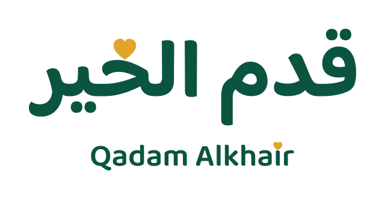
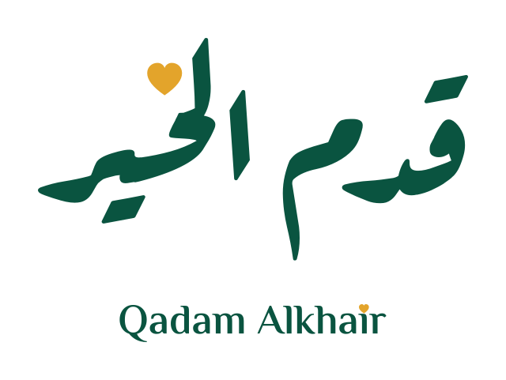
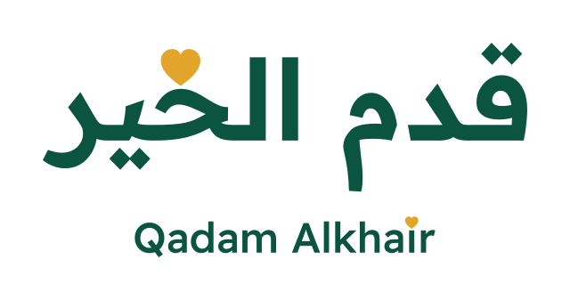

نقطة «الخير» قلب. النقطة الوحيدة في كلمة الخير — بالعربي والإنجليزي — صارت قلباً ذهبياً. وكل الباقي خطّ بسيط هادئ.
النسخ



الألوان
Khair Green #0A5440
Leaf Green #0F7B5A
Khair Gold #E3A42B
Light Gold #F6CB6B
Ink #12241F
Cream #FBF7EF